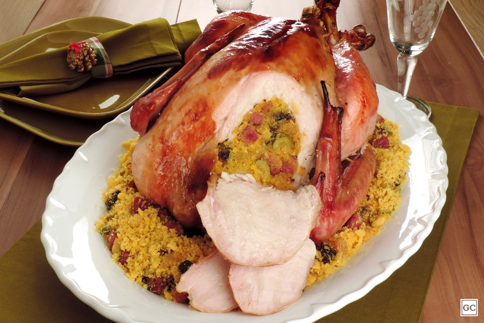

Aves · Outras aves
Peru recheado com risoto

Ingredientes
- ½ xícara de uvas-passas pretas
- 1 xícara de champanhe
- 4 colheres (sopa) de manteiga
- 1 cebola picada
- 2 xícaras de arroz
- 4 xícaras de caldo de galinha
- 2 xícaras de castanhas de caju
- 1 xícara de manteiga
- 2 cebolas picadas
- 1 lata de purê de tomate
- 1 colher (sopa) de sal
- 2 colheres (chá) de pimenta-do-reino branca
- 2 xícaras de champanhe
- 1 peru de 4 a 5 kg
Modo de preparo
- Coloque as uvas-passas numa tigela, cubra com champanhe e deixe de molho.
- Numa panela, derreta 4 colheres de manteiga em fogo baixo. Junte a cebola e deixe dourar. Acrescente o arroz e frite até soltar. Cubra com o caldo de galinha e cozinhe até o arroz ficar macio mas al dente.
- Retire do fogo, acrescente as uvas-passas escorridas e as castanhas picadas. Misture.
- Regue o arroz com o champanhe do molho das uvas e misture com cuidado até obter um risoto úmido. Congele.
- Numa outra panela, derreta 1 xícara de manteiga em fogo baixo. Retire do fogo e acrescente as cebolas, o purê de tomate, o sal, a pimenta branca e o champanhe. Misture.
- Tempere o peru inteiro com essa mistura, levantando a pele do peito para espalhar por baixo também.
Observação
Ao assar, calcule cerca de 1 hora de forno para cada quilo de peru. Congelamento: risoto em recipiente rígido, depois em saco plástico; peru embrulhado em alumínio e saco plástico hermético. Descongelamento: descongele peru e risoto na geladeira de um dia para o outro; recheie o peru com o risoto, cubra com alumínio e asse a 200 °C por 4 a 5 horas, regando com caldo de galinha; retire o alumínio 40 min antes para dourar. Sirva com gomos de laranja.